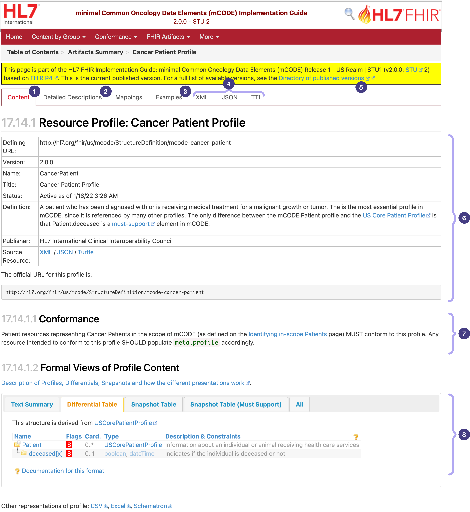
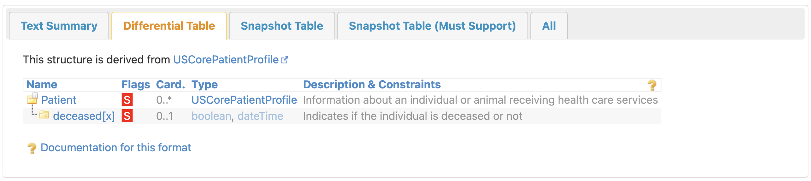
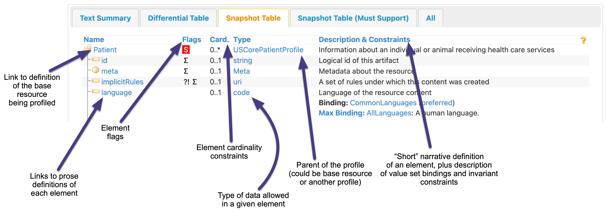

FSH Seminar
0.1.0
- ci-build
FSH Seminar
0.1.0
- ci-build
Publish Box goes here
The goal of this module is to describe why you might want to create a FHIR IG, what a FHIR IG is, and how to read one. To do this, we will cover some foundational concepts in the abstract, and then see how these concepts are implemented in a completed IG.
The base FHIR specification is purposefully incomplete. While it defines the critical, generalizable elements needed for a FHIR implementation, such as the syntax and the base FHIR resources, it leaves the use case-specific implementation details undefined.
FHIR Implementation Guides (IGs) fill in these gaps in different ways depending on the specific needs.
Grahame Grieve, the FHIR Product Director, breaks down the purpose of FHIR IGs into four broad categories in this presentation:
National Base IGs
Doesn't describe a full implementation; instead, describes how regulations for a national health infrastructure apply in the context of FHIR. Typically this involves the code systems, identifiers, and extensions necessary for regulation (e.g., race and ethnicity in the US; or Australian indigenous status) specific to the jurisdiction in question.
(Typically these should not contain constraints like requiring presence of a specific element or MustSupport, which are more suitable for IGs satisfying one of the other purposes below.)
Domain of Knowledge IGs
Describes how to represent a clinical or business concept, without defining an API for exchanging these data.
Example: International Patient Summary, mCODE
Community of Implementation
An agreement on how data are exchanged by a group of actors (i.e., contains an API).
Product IGs
Documents what a specific piece of software does in the FHIR ecosystem. These are not published by HL7, but may be published by vendors to document their own software. Often are not public.
Some IGs fulfill multiple purposes, which is generally ok as long as the implications are considered carefully. For example, in the case of National Base IGs, a multi-purpose may be problematic: for example, in US Core, implementers may want to inherit the National Base IG content and not the Community of Implementation content, the latter of which includes US Core's cardinality/MustSupport constraints.
The content in this course is to some degree focused around the reading and writing of Domain of Knowledge IGs, and to a lesser extent Community of Implementation1, though many parts of the course are applicable to all.
Now that we have established the broad purpose for creating a FHIR IG, we will more formally define the contents of an IG.
In short, FHIR Implementation Guides (IGs) are:
A set of rules of how a particular interoperability or standards problem is solved 2
To define these rules, IGs include:
The high-level goal of an IG is to provide sufficiently detailed instructions to implementers so that they can independently set up systems that will be able to successfully communicate with each other.
To meet this goal, the computable rules are often insufficient. IGs usually include a significant amount of narrative content to supplement the computable rules, which may describe:
Implementations are said to conform to an IG if they abide by both the computable and narrative rules in the IG.
The computable portions of an IG can be used for automated testing for conformance. For example:
Narrative conformance criteria typically use RFC 2119 key words in all-caps like MUST, SHOULD, and MAY. This signals to implementers which specific parts of the narrative should be treated as conformance criteria. Because narrative conformance criteria can't usually be assessed algorithmically, the IG authors must take care to make sure the narrative content clearly provides the necessary information to implementers.
First, start by reading the narrative content.
Start by reading the narrative on the home page. If other narrative pages are prominently mentioned or linked to from the home page, read them as well.
Then, examine the computable content.
Several different types of computable content are contained within a typical IG (these are described below). Where you start depends on your goal.
For example, if you are interested in gaining a general understanding of an IG, you may want to review all the computable content superficially (which can be done by clicking each link on the artifacts.html page of the IG).
Alternatively, you may be interested in an implementation for a specific actor or use case. In this case, the IG will hopefully provide some guidance on which resources are most important. If not, for content-related use cases, Profiles are likely the best entry point to the computable content. For API-driven use cases, CapabilityStatements are a logical starting point.
The next few sections will provide an overview of common types of computable artifacts.
The goal of a FHIR profile is to take one of the base FHIR resources and add computable rules on top of it. These rules come in two flavors:
To make this more concrete, let's look at an example instance of a base FHIR resource – in this case, Patient. This instance is the package of data a FHIR server might use to represent a specific patient. For example, if you wanted to retrieve the data for the patient with the medical record number 1032702, you could query https://hospital.example.org/fhir/Patient/1032702. The response to this query would be the instance of the Patient resource describing this patient, which might look like this:
{
"resourceType": "Patient", // Resource identity and metadata
"id": "PatientExample",
"meta": {
"profile": [
"http://hl7.org/fhir/us/core/StructureDefinition/us-core-patient"
]
},
"extension": [ // Extension
{
"url": "http://hl7.org/fhir/us/core/StructureDefinition/us-core-birthsex",
"valueCode": "F"
}
],
"identifier": [ // Standard data
{
"use": "usual",
"type": {
"coding": [
{
"code": "MR",
"system": "http://terminology.hl7.org/CodeSystem/v2-0203",
"display": "Medical Record Number"
}
],
"text": "Medical Record Number"
},
"system": "http://hospital.smarthealthit.org",
"value": "1032702"
}
],
"active": true,
"name": [
{
"family": "Shaw",
"given": [
"Amy",
"V."
]
}
],
"telecom": [
{
"system": "phone",
"value": "555-555-5555",
"use": "home"
},
{
"system": "email",
"value": "amy.shaw@example.com"
}
],
"gender": "female",
"birthDate": "1987-02-20",
"address": [
{
"line": [
"49 Meadow St",
"Apartment B"
],
"city": "Mounds",
"state": "OK",
"postalCode": "74047",
"country": "US",
"period": {
"start": "2016-12-06",
"end": "2020-07-22"
}
}
]
}
The fields under "Standard data" in the example above are often called "elements" in an instance of a FHIR resource, as are extensions and slices. For example, the element gender has the value female in the example above. Elements may be nested (like address.city, which has the value Mounds), have multiple values (like address.line), or refer to a specific code from a terminology (like extension[us-core-birthsex].valueCode).
When evaluating an instance for conformance, the computable rules specified in the base FHIR resource and any applicable profiles are applied across the elements in the instance. In this case, the instance must conform to the rules specified in FHIR's specification for the Patient resource – or it wouldn't be an instance of Patient at all.
Additionally, if a resource instance follows the rules defined by a FHIR profile (and any applicable general conformance criteria from the profile's IG), then the instance is said to "conform" to the profile. A single instance may even conform to multiple profiles simultaneously.4
A note on FHIR jargon. The FHIR spec defines a number of resources, which are information models that are the building blocks of FHIR implementations. FHIR servers create an instance of a given resource (i.e., an instance of the Patient resource representing a specific patient). It is this instance that may conform to a given FHIR profile, not the resource itself. But in casual conversation, you may hear that "resource X conforms to profile Y" – this really means "resource instance X conforms to profile Y", but saying "resource instance" is cumbersome.
You may also here "resource" used to refer to the FHIR specification's definition of a resource: e.g., "name is an element of the Patient resource" refers to the name element in the FHIR spec's definition of the Patient resource.
Each profile has its own page in an IG build, and this is where you can find the conformance rules specified by that profile. Here's an example of a profile page in an IG. The next part of the course will talk about how these pages are generated.
Below is an annotated screenshot showing some of the key components of profiles in an IG:

Name, human-readable Title, and the narrative Definition.MustSupport flag. This is described later.Typically the differential ("diff") table tab is the best place to start when trying to understand what a rules a profile is setting. Here's the diff table from the example of profile linked above:

This shows that this profile adds two constrains: the addition of MustSupport flags for the root Patient element (indicating that the entire profile is MustSupport to implementers ), and Patient.deceased[x]. The meaning of MustSupport and the full set of possible element-level constraints are discussed in the next part of the course.
The snapshot table tab is typically the best way to see all elements that may/should/must be populated for an instance of a resource to conform. This table is too long in the example profile to reproduce as a screenshot, but you can see it here.
The table tabs have a high amount of information density:

The next part of the course will cover the constrains in the table tabs in more detail. In the meantime, you can click on the headings in the example profile to go to the relevant parts of the FHIR spec.
FHIR IGs can define two terminology-related artifacts:
There are many more artifacts that can be defined by IGs. These will be enumerated in Part 4.
To see a practical application of the concepts discussed above, we will review portions of the minimal Common Oncology Data Elements (mCODE) Implementation Guide (specifically the STU2 version), which is primarily a Domain of Knowledge IG but also has some Community of Implementation content:6
Home page: This is the entry point to the IG, and typically describes the background, scope, and general structure of the IG. Ideally the home page of an IG should be the single point of entry for all key content: by following links in the navigation bar or in the narrative of the home page, all the key IG content should be easily accessible.
The IG home page should also help guide the reader through the key content within the IG. Some IGs do a better job of this than others, and if the authors' intent is not clear for a given IG you can fall back onto some standard navigation pages (discussed below).
The key information on the mCODE home page is related to the Content by Group pages (see next bullet point), and the diagram showing the structure of mCODE STU2.
mCODE's home page also links to some other key concepts and resources specific to this IG, including the Data Dictionary, development history, credits, and author contact information.
"Content by Group" pages: Section 1.2 of the home page links to the different groups of profiles and other artifacts in the IG. Not all IGs have this structure (and many IGs don't have as many artifacts as the mCODE IG, making this kind of structure is unnecessary).
Following the pattern described above of reading prominently linked narrative content before diving into the individual IG artifacts, consider reviewing these pages next after finishing the content on the home page.
Note that the Content by Group Pages are also linked second in the navigation bar, another indication of their level of importance.
Conformance pages: These appear third in the navigation bar, and are custom-written narrative pages specifically for the mCODE IG, broken into four sections by topic.
Reviewing the details of these is beyond the scope of this course, and not all IGs include this much information on conformance. However, one common item that you should be looking for is how the IG defines MustSupport, as this is a key conformance concept and is not defined in the base FHIR specification, but is instead left to profile authors to define
FHIR Artifacts: The fourth item in the navigation bar lists the various types of FHIR artifacts. These are custom pages made specifically for mCODE (except for "Complete Listing"; this is described below).
Note that you likely have come across all the key artifacts as these are also listed at the bottom of each "Content by Group" page.
Standard navigation pages
Every IG has an artifacts.html page, so if you find the IG's approach to organizing artifacts in the narrative confusing, you can always open that page to see a comprehensive list of all artifacts. Here's that page for mCODE (found at FHIR Artifacts > Complete Listing in the nav bar).
IGs also have a table of contents page (toc.html) that you can use to see a full list of all the web pages in the IG. Here's that page for mCODE.
Now that we (hopefully) understand the overall purpose of the IG and the general conformance criteria, let's look in detail at one of the key profiles in the IG: Primary Cancer Condition.
Condition.extension:assertedDate and Condition.extension:histologyMorphologyBehavior. Clicking the names in the diff table brings you to the detailed definitions, which provide additional information on these extensions. You may notice these are slices of Condition.extension, which is a topic we'll cover later in the course.Condition.code to the Primary Cancer Disorder Value Set. Clicking on extensible in the diff table gives you more information about what this binding strength means.Condition.bodySite to Body Location Qualifier Value Set, and a MustSupport flag for this element.Condition.bodySite: Condition.bodySite.extension:locationQualifier and Condition.bodySite.extension:lateralityQualifier.Condition.stage.assessment to refer to an Observation conforming to Cancer Stage Group Profile, and added MustSupport flags to this element and its parent.Condition.stage.type to Staging Type for Stage Group Value Set.This information tells me as an implementer what sort of data and terminology I'll need to have available to create conforming instances of Condition.
This is the first pass of the process needed to understand each profile in the IG. Depending on the use case, other resources may also need to be reviewed in detail.
Now that we've seen how to read an IG, in the next part of the course we will look at how to create an IG from scratch.
We do not spend much time on the portion of FHIR IGs related to APIs, which are typically targeted at software engineers. ↩
These come in two flavors: slices (constraints on the parts of an element can hold multiple values) and extensions (constraints on an extension or modifierExtension element, which counter-intuitively use constraints to extend functionality). We will cover these in more detail later in the course. ↩
Resource instances can actually specify which profiles they intend to conform to using the meta.profile metadata element. But instances may also unintentionally conform to many profiles – this is actually beneficial to interoperability as in some cases, a FHIR server's default response may already conform to a given profile if that profile is relatively unconstrained. ↩
Defining your own code system is generally only a good idea as a last resort. From the implementer's perspective, it is generally more burdensome to add support for a brand new code system vs. using a more common code system that might already be part of an implementation. ↩
STU refers to Standard for Trial Use, which is a HL7 ballot level indicating the maturity of the implementation guide. This is the most recent balloted version of mCODE as of writing. More information about the HL7 ballot process can be found here. ↩